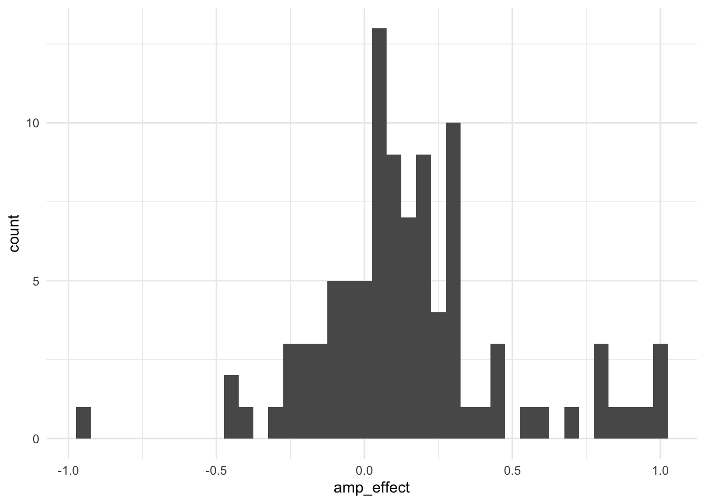

library(readr) # for read_csv()
library(dplyr) # for %>%, filter(), mutate(), count(), add_count(), n_distinct(), the join functions
library(tidyr) # for pivot_wider()
library(tibble) # for tibble()
library(ggplot2) # for plotting
library(assertr) # for verify(), assert(), and predicates such as within_bounds()14 Checking your data processing
The previous chapters covered how to process data. This chapter covers how to check that you did it correctly.
Reproducible code always gives you the same answer, but that doesn’t mean it gives you the right one. Most data processing errors don’t produce an error or even a warning. A join repeats some participants’ rows, as.numeric() turns a typo into NA, filter() silently drops rows with missing values, or a chunk that reverse-scores an item gets run twice. The code runs, the .html file renders, and the results are wrong. The only way to catch these errors is to check, and the best way to check is to write the checks into your code, so that they run every time the code runs.
This chapter covers:
- How to make checks fail loudly with the {assertr} package, so that you can’t miss them, and where to put them.
- Checks that come from the design of your study, e.g., the number of participants and trials.
- Checks on the values in the data, e.g., that responses are within the possible range of the scale.
- Checks on the relationships between variables, e.g., that the items of a scale correlate positively.
- How to write code that is easy to check: avoiding repetition, writing your own functions, and naming data frames.
- Rendering as a check that your code is reproducible.
Most of the checks use functions from the previous chapters, e.g., count(), n_distinct(), and anti_join(). What’s new is the habit of using them to check your work, and a package that turns them into checks that stop the code when they fail.
14.1 Why check?
Imagine you’ve written the processing code for your thesis and it runs without errors. How confident are you that every participant’s score is correct? It’s tempting to treat “it runs” as “it works”, but R only stops when it is asked to do something impossible, e.g., to use a column that doesn’t exist. It does not stop when it is asked to do something that is possible but wrong, and most processing errors are of this kind:
- A join repeats rows because a participant’s ID appears twice in one of the data frames (see the Binding and joining chapter).
as.numeric()turns a response that isn’t a number intoNA, with a warning that is easy to miss, and that doesn’t appear in the rendered .html file at all if the chunk (or, as in this book, the whole document) haswarning: false.filter(gender != "female")drops not only the women but also everyone whose gender isNA, becauseNA != "female"isNA, notTRUE(see the Data types chapter).- A participant who did the task twice has twice as many trials, so their mean is based on both attempts.
- An item is reverse scored twice, and so is not reversed at all (see the Data transformation II chapter).
- Code written by you, a colleague, or an LLM does something subtly different from what was intended.
The idea behind all the checks in this chapter is simple: decide what you expect to find before you look, then write code that tells you if you were wrong. Your expectations come from the design of your study: how many participants you recruited, how many trials each task had, what the response options of each scale were, and which variables should be related to each other. Many of them are already written down in your preregistration, your materials, or your ethics application.
14.2 Example data
This chapter uses two of the raw data files from earlier chapters. Both come from the same study, in which participants completed an Affect Misattribution Procedure (AMP) and a short self-report scale, as described in the Reshaping and pivots chapter.
- ‘data_amp_raw.csv’: trial-level data from the AMP. After some practice trials, each participant should complete 72 test trials: 36 trials with positive primes and 36 with negative primes. On each trial, ‘correct’ is 1 if the participant evaluated the Chinese character as pleasant after a positive prime, or unpleasant after a negative prime, and 0 otherwise.
- ‘data_selfreport_raw.csv’: responses to three self-report items (‘like’, ‘positive’, and ‘prefer’), rated on a 1 to 7 scale.
dat_amp_raw <- read_csv("../data/raw/data_amp_raw.csv")
dat_selfreport_raw <- read_csv("../data/raw/data_selfreport_raw.csv")14.3 Making checks fail loudly
The most common way to check data is to print something and look at it, e.g., count(dat, condition). This is useful while you’re exploring, but it isn’t a reliable check: it depends on you reading the output every time the code runs, including the hundredth time, after the data has been updated, when you’ve stopped looking. A better check states your expectation in code, and stops the code with an error if it isn’t met.
The {assertr} package provides functions for writing checks that fit into a pipe. Each one takes a data frame, checks it, and then either passes the data frame on unchanged, so that the pipe continues, or stops the code with an error that describes what failed. The two main functions are verify() and assert().
14.3.1 verify()
verify() takes any logical test that can be calculated from the data frame’s columns. If the test is TRUE, the data frame passes through unchanged:
n_participants_expected <- 102
dat_amp_checked <- dat_amp_raw %>%
verify(n_distinct(subject) == n_participants_expected)Nothing was printed, which means the check passed, and ‘dat_amp_checked’ is identical to ‘dat_amp_raw’. If the expectation is wrong, the code stops. (In this chapter, chunks that are meant to fail have the chunk option #| error: true, so that the book still renders and you can see the error. Don’t use this option in your own processing code: the point of a check is that it stops the code.)
dat_amp_checked <- dat_amp_raw %>%
verify(n_distinct(subject) == 100)verification [n_distinct(subject) == 100] failed! (1 failure)
verb redux_fn predicate column index value
1 verify NA n_distinct(subject) == 100 NA 1 NAError:
! assertr stopped executionThe ‘description’ argument adds a message in your own words, which makes errors easier to understand when you come back to the code months later:
dat_amp_checked <- dat_amp_raw %>%
verify(n_distinct(subject) == 100,
description = "There should be 100 participants")There should be 100 participants
verification [n_distinct(subject) == 100] failed! (1 failure)
verb redux_fn predicate column index value
1 verify NA n_distinct(subject) == 100 NA 1 NAError:
! assertr stopped executionNote that verify() treats NA as a failure, because NA isn’t TRUE. This is usually what you want: if a check can’t be evaluated because of missing data, you want to know about it.
tibble(response = c(1, 5, NA)) %>%
verify(response <= 7)verification [response <= 7] failed! (1 failure)
verb redux_fn predicate column index value
1 verify NA response <= 7 NA 3 NAError:
! assertr stopped execution14.3.2 assert()
assert() applies a predicate (a function that returns TRUE or FALSE for each value) to one or more columns, and reports every value that fails it. {assertr} provides predicates for the most common checks:
within_bounds(min, max): values are within a range, including its end points by default.in_set(...): values are in a set of allowed values, e.g.,in_set(0, 1).is_uniq: no value appears more than once, e.g., for participant IDs.not_na: no values are missing.
The columns are chosen in the same way as in select(), so you can list them by name or use helpers such as starts_with() and all_of().
tibble(response = c(1, 5, 9, NA)) %>%
assert(within_bounds(1, 7), response)Column 'response' violates assertion 'within_bounds(1, 7)' 1 time
verb redux_fn predicate column index value
1 assert NA within_bounds(1, 7) response 3 9Error:
! assertr stopped executionThe error lists each value that failed, and its row number (‘index’). Note that, unlike verify(), the predicates within_bounds() and in_set() ignore NA by default: the NA was not reported as a failure. This is often what you want, e.g., if missing responses are expected. If they aren’t, check for them separately with assert(not_na, response).
14.3.3 Checks belong in the pipe that creates the data
Because verify() and assert() return the data frame unchanged, the natural place for them is at the end of the pipe that creates the data frame they check:
dat_scored <- dat_raw %>%
# processing steps
... %>%
# checks
verify(nrow(.) == 100) %>%
assert(is_uniq, id) %>%
assert(within_bounds(1, 7), score)The . in nrow(.) refers to the data frame being passed along the pipe. If any check fails, the code stops and ‘dat_scored’ is not created, so nothing downstream can use data that failed its checks.
Avoid running a check on its own without saving the result, e.g., dat_scored %>% assert(is_uniq, id). It works, but when the check passes it prints the whole data frame, which clutters the rendered .html file.
14.3.4 stopifnot() for checks outside a data frame
Base R’s stopifnot() does the same job for checks that aren’t about a single data frame, e.g., comparing two data frames. If all its tests are TRUE, it does nothing. If any isn’t, it stops with an error, and, like verify(), it treats NA as a failure. You can name a test to set the error message:
stopifnot("There should be 100 participants" = n_distinct(dat_amp_raw$subject) == 100)Error:
! There should be 100 participantsIn this chapter, verify() and assert() are used for checks on a data frame, and stopifnot() only where a check involves more than one.
14.3.5 Where to put checks
Put each check in the same script as the code it checks, immediately after the step it checks, ideally in the same pipe. For example, check the number of rows at the end of the pipe that joins two data frames, and the range of a score at the end of the pipe that calculates it.
This has several advantages over printing summaries at the end, or putting the checks in a separate validation script:
- The checks run every time the processing runs, so they can’t be forgotten or fall out of date.
- When a check fails, it fails at the step that caused the problem, rather than several steps later, where the cause is harder to find.
- Anyone reading the code (including future you) can see what each step was supposed to do, so the checks also document your expectations.
- Because the code stops when a check fails, the processed data file is only written if every check passed.
Passing checks print nothing, so they don’t clutter the rendered .html file. Where a number is worth reporting, e.g., how many participants were excluded and why, report it in the text with in-line code (see the Reproducible reports chapter).
14.4 Checks that come from the design
The design of a study tells you what the data should look like: how many participants there should be, how many trials and items each participant should have, and how many participants should be in each condition. These are the most useful checks of all, because the design was decided before the data existed, so it gives you expectations that don’t depend on the data.
14.4.1 Count participants at every step
Count the number of participants (and rows) at each step, and think about whether the number should have changed. The AMP data has 8224 rows from 102 participants. Let’s remove the instructions and practice trials, keeping only the test trials. This should remove trials, but not participants:
dat_amp_test_trials <- dat_amp_raw %>%
filter(blockcode == "test" & trialcode != "instructions") %>%
select(subject, trialcode, correct, latency) %>%
verify(n_distinct(subject) == n_participants_expected)verification [n_distinct(subject) == n_participants_expected] failed! (1 failure)
verb redux_fn predicate column index
1 verify NA n_distinct(subject) == n_participants_expected NA 1
value
1 NAError:
! assertr stopped executionThe check failed: participants have disappeared. To find out which ones, run the pipe without the check, and use anti_join() to find the participants in the raw data who are not in the result:
dat_amp_test_trials <- dat_amp_raw %>%
filter(blockcode == "test" & trialcode != "instructions") %>%
select(subject, trialcode, correct, latency)
dat_amp_raw %>%
distinct(subject) %>%
anti_join(dat_amp_test_trials, by = "subject")| subject |
|---|
| 548957868 |
| 893377996 |
dat_amp_raw %>%
filter(subject %in% c(548957868, 893377996)) %>%
count(subject, blockcode, trialcode)| subject | blockcode | trialcode | n |
|---|---|---|---|
| 548957868 | practice | prime_negative_practice | 2 |
| 548957868 | practice | prime_positive_practice | 1 |
| 548957868 | test | instructions | 1 |
| 893377996 | practice | prime_negative_practice | 1 |
| 893377996 | test | instructions | 1 |
They have no test trials: they did the practice trials, or only saw the instructions, and then stopped. Removing them is fine, but it should be a decision you make on purpose, not something that happens without you noticing. Now that we understand why, we can update the check, with a comment explaining the change:
dat_amp_test_trials <- dat_amp_raw %>%
filter(blockcode == "test" & trialcode != "instructions") %>%
select(subject, trialcode, correct, latency) %>%
# 2 participants (548957868 and 893377996) stopped before the test trials
verify(n_distinct(subject) == n_participants_expected - 2)Only change a check to fit the data once you understand why the data didn’t fit it. Changing it just to make the error go away defeats its purpose.
This example also shows a common blind spot of count(): it only counts values that exist, so participants with zero trials don’t appear in its output as 0, they don’t appear at all.
14.4.2 Check the number of observations per participant
Each participant should have exactly 72 test trials. Rather than looking at the counts for 100 participants by eye, count how often each number of trials occurs:
dat_amp_test_trials %>%
count(subject) %>%
count(n, name = "n_participants")| n | n_participants |
|---|---|
| 8 | 1 |
| 72 | 98 |
| 144 | 1 |
Most participants have 72 trials, as expected, but one has 144 and one has 8. As a check:
n_test_trials_expected <- 72
dat_amp_n_trials <- dat_amp_test_trials %>%
count(subject, name = "n_trials") %>%
assert(in_set(n_test_trials_expected), n_trials)Column 'n_trials' violates assertion 'in_set(n_test_trials_expected)' 2 times
verb redux_fn predicate column index value
1 assert NA in_set(n_test_trials_expected) n_trials 27 144
2 assert NA in_set(n_test_trials_expected) n_trials 47 8Error:
! assertr stopped executionThis check has done its job: it found two problems that would otherwise have been included in the results. The participant with 144 trials completed the task twice, so their score would have been based on two attempts. The participant with 8 trials stopped early, so their score would have been based on very few trials. Whether to exclude these participants, or e.g., keep the first attempt of the participant who did the task twice, is a decision that should ideally be made in your preregistration. Here, we’ll exclude both.
add_count() adds the count for each participant as a new column, without summarizing the data, so it can be used both to apply the exclusion and to check that it worked:
dat_amp_trials <- dat_amp_test_trials %>%
add_count(subject, name = "n_trials") %>%
filter(n_trials == n_test_trials_expected) %>%
assert(in_set(n_test_trials_expected), n_trials) %>%
# 2 more participants excluded: 1 completed the task twice, 1 stopped early
verify(n_distinct(subject) == n_participants_expected - 4)14.4.3 Check the cells of the design
As well as the total number of trials, check that each participant has the right number of trials of each type. In the AMP, that’s 36 trials with each type of prime:
n_trials_per_prime_expected <- 36
dat_amp_trials <- dat_amp_test_trials %>%
add_count(subject, name = "n_trials") %>%
filter(n_trials == n_test_trials_expected) %>%
add_count(subject, trialcode, name = "n_trials_per_prime") %>%
assert(in_set("prime_positive", "prime_negative"), trialcode) %>%
assert(in_set(n_trials_per_prime_expected), n_trials_per_prime) %>%
verify(n_distinct(subject) == n_participants_expected - 4)The same logic applies to between-participant designs: count the number of participants in each condition, or each combination of conditions, e.g., count(condition, order), and check that every cell you planned is present, that there are no cells you didn’t plan (e.g., a misspelled condition name, which assert(in_set(...)) catches), and that the numbers are roughly what your randomization should produce.
14.4.4 Check that IDs are unique
Once data has been summarized to one row per participant, each participant ID should appear exactly once. This is the most important check before joining data frames, as covered in the Binding and joining chapter.
dat_amp_scored <- dat_amp_trials %>%
# evaluation = 1 if the character was rated as pleasant
mutate(evaluation = if_else(trialcode == "prime_positive", correct, 1 - correct)) %>%
group_by(subject, trialcode) %>%
summarize(mean_evaluation = mean(evaluation),
.groups = "drop") %>%
pivot_wider(names_from = trialcode,
values_from = mean_evaluation,
names_prefix = "mean_evaluation_") %>%
mutate(amp_effect = mean_evaluation_prime_positive - mean_evaluation_prime_negative) %>%
assert(is_uniq, subject)14.4.5 Check that missing data matches the design
Missing data should follow the design. If every participant was shown every item, there should be little missing data, and it should be spread across items. If some items were only shown to a random third of participants, those items should be missing for about two thirds of participants. Count the missing values in every column with across():
dat_amp_scored %>%
summarize(across(everything(), ~ sum(is.na(.x))))| subject | mean_evaluation_prime_negative | mean_evaluation_prime_positive | amp_effect |
|---|---|---|---|
| 0 | 0 | 0 | 0 |
There is no missing data in the scored AMP data, which is what we expect, given that every remaining participant has all 72 trials. As a check, assert(not_na, everything()) would stop the code if any value were missing.
14.5 Checks on values
14.5.1 Check conversions between data types
Converting text to numbers with as.numeric() turns anything that isn’t a number into NA. R gives a warning when this happens, but warnings are easy to miss, and they are hidden in the rendered .html file if the document uses warning: false. So check: the conversion should not create any NAs that weren’t already there.
dat_selfreport_trials <- dat_selfreport_raw %>%
filter(trialcode != "instructions") %>%
select(subject, trialcode, response) %>%
mutate(response_numeric = as.numeric(response)) %>%
verify(sum(is.na(response_numeric) & !is.na(response)) == 0,
description = "Converting responses to numeric should not create NAs")Converting responses to numeric should not create NAs
verification [sum(is.na(response_numeric) & !is.na(response)) == 0] failed! (1 failure)
verb redux_fn predicate column
1 verify NA sum(is.na(response_numeric) & !is.na(response)) == 0 NA
index value
1 1 NAError:
! assertr stopped executionIt did. Which responses were converted to NA?
dat_selfreport_raw %>%
filter(trialcode != "instructions") %>%
mutate(response_numeric = as.numeric(response)) %>%
filter(is.na(response_numeric) & !is.na(response)) %>%
select(subject, trialcode, response, response_numeric)| subject | trialcode | response | response_numeric |
|---|---|---|---|
| 893377996 | like | Ctrl+‘B’ | NA |
One participant has a response of “Ctrl+‘B’”, presumably because they pressed a keyboard shortcut instead of choosing a response. Setting this to NA is the right decision, but now it is a decision you know about. We’ll record it in the check, which now states exactly what we expect, so that it will fail if the data changes and more non-numeric responses appear:
dat_selfreport_trials <- dat_selfreport_raw %>%
filter(trialcode != "instructions") %>%
select(subject, trialcode, response) %>%
mutate(response_numeric = as.numeric(response)) %>%
# 1 response ("Ctrl+'B'") is not a number and is expected to become NA
verify(sum(is.na(response_numeric) & !is.na(response)) == 1)14.5.2 Check the range of values
Every variable has a range of values that are possible. Responses on a 1 to 7 scale must be between 1 and 7. A proportion must be between 0 and 1. A reaction time must be positive. A sum score of 10 items on a 1 to 5 scale must be between 10 and 50. Values outside this range mean that something went wrong, either in data collection or in your processing.
dat_selfreport_trials <- dat_selfreport_raw %>%
filter(trialcode != "instructions") %>%
select(subject, trialcode, response) %>%
mutate(response_numeric = as.numeric(response)) %>%
verify(sum(is.na(response_numeric) & !is.na(response)) == 1) %>%
assert(in_set("like", "positive", "prefer"), trialcode) %>%
assert(within_bounds(1, 7), response_numeric)Both checks pass. In the AMP data, ‘correct’ should only be 0 or 1, and reaction times must be positive. These checks go at the end of the pipe that creates ‘dat_amp_trials’, i.e., assert(in_set(0, 1), correct) and assert(within_bounds(0, Inf, include.lower = FALSE), latency), as in the Putting it together section.
Note that checking the possible range doesn’t tell you whether the values are plausible. Look at the summary of the AMP reaction times:
summary(dat_amp_trials$latency) Min. 1st Qu. Median Mean 3rd Qu. Max.
1.0 422.0 635.5 814.9 908.0 71824.0 Every latency is positive, but some are implausibly fast (a response in 1 ms is not a real response to the stimulus) and some are extremely slow (over a minute). These aren’t processing errors, but they are worth knowing about, e.g., because your preregistration might specify that trials faster than 200 ms are excluded. Checks of the possible range catch errors, and looking at the distribution catches surprises.
14.5.3 Checking many variables at once
assert() can check many columns in one line, using the same helpers as select(). Let’s put the self-report items in the wide format, join them to the AMP scores, and check the range of every variable:
selfreport_items <- c("like", "positive", "prefer")
dat_selfreport_wide <- dat_selfreport_trials %>%
select(subject, trialcode, response_numeric) %>%
pivot_wider(names_from = trialcode,
values_from = response_numeric) %>%
assert(is_uniq, subject)
dat_processed <- dat_amp_scored %>%
left_join(dat_selfreport_wide, by = "subject", relationship = "one-to-one") %>%
verify(nrow(.) == nrow(dat_amp_scored)) %>%
assert(within_bounds(0, 1), starts_with("mean_evaluation_")) %>%
assert(within_bounds(-1, 1), amp_effect) %>%
assert(within_bounds(1, 7), all_of(selfreport_items))Each range is written once, next to the columns it applies to, so it is easy to compare with the study materials. In a study with dozens of scales, you could also store each scale’s possible range in a small data frame (a lookup table), rather than in the code.
14.6 Checks on relationships between variables
Some errors produce values that are all within the possible range, but wrong. The most common is a reversed score: a reverse-keyed item that wasn’t reversed, or was reversed twice, still has values between 1 and 7. These errors can be caught by checking the relationships between variables.
14.6.2 Calculate it a second way
If a score is important, calculate it a second way and check that you get the same answer. For example, the AMP effect can also be calculated without pivoting, directly from the trial-level data:
dat_amp_scored_check <- dat_amp_trials %>%
mutate(evaluation = if_else(trialcode == "prime_positive", correct, 1 - correct)) %>%
group_by(subject) %>%
summarize(amp_effect = mean(evaluation[trialcode == "prime_positive"]) - mean(evaluation[trialcode == "prime_negative"]))
stopifnot(all.equal(dat_amp_scored$amp_effect, dat_amp_scored_check$amp_effect))This check compares two data frames, so it uses stopifnot(). all.equal() compares numbers while allowing for tiny differences due to how computers store decimals (see the Data types chapter), whereas identical() requires them to be exactly the same. The second calculation could also be done by an existing function or package, or by a colleague who writes their own code without looking at yours.
14.6.3 Follow one participant through the processing
A simple and surprisingly effective check is to pick one participant, look at their raw data, calculate their score by hand (or in a few lines of code), and compare it with their row in the processed data. Choose participants who are most likely to reveal problems, e.g., one with missing data, or one who was excluded.
dat_processed %>%
filter(subject == 504546409)| subject | mean_evaluation_prime_negative | mean_evaluation_prime_positive | amp_effect | like | positive | prefer |
|---|
Participant 504546409, who only completed 8 trials, is not in the processed data, as intended.
14.6.4 Look at the data
Finally, plot the distributions of your key variables. Plots show problems that no check you thought to write will catch, e.g., a cluster of identical values, or a variable that takes only a few values when it should take many. The Principles of data visualization chapter covers plotting in detail.
ggplot(dat_processed, aes(x = amp_effect)) +
geom_histogram(binwidth = 0.05) +
theme_minimal()
14.7 Writing code that is easy to check
The checks above catch errors after they have been made. It’s even better to write code in a way that makes errors less likely, and easier to spot by reading the code.
14.7.1 Don’t repeat yourself
When you copy and paste code and change a small part of it, it is very easy to forget to change one of the copies. Can you spot the error in this code?
dat_processed %>%
summarize(like_mean = mean(like, na.rm = TRUE),
positive_mean = mean(positive, na.rm = TRUE),
prefer_mean = mean(positive, na.rm = TRUE))| like_mean | positive_mean | prefer_mean |
|---|---|---|
| 1.680412 | 1.71134 | 1.71134 |
‘prefer_mean’ is calculated from the ‘positive’ column. The code runs without errors and the results look plausible. It is one line out of three here, but in a real script it could be one line out of hundreds. Code with no repetition can’t make this error:
dat_processed %>%
summarize(across(all_of(selfreport_items), ~ mean(.x, na.rm = TRUE), .names = "{.col}_mean"))| like_mean | positive_mean | prefer_mean |
|---|---|---|
| 1.680412 | 1.71134 | 1.731959 |
This is the principle of “don’t repeat yourself” (DRY). Some ways to apply it:
- Use
across()to do the same thing to many columns, instead of repeating lines inmutate()orsummarize()(see the Data transformation II chapter). Similarly, check many columns with oneassert(). - Define values once, at the top of the script, and use the name everywhere else, e.g.,
n_test_trials_expected <- 72andselfreport_items <- c("like", "positive", "prefer"), as above. A number that appears in the code without a name, e.g.,filter(n == 72), is sometimes called a “magic number”: the reader has to guess what it means, and if the design changes, you have to find and change every copy of it. - Write your own functions when you find yourself copying and pasting the same block of code more than twice.
14.7.2 Writing your own functions
You have used many functions, e.g., mean() and filter(). You can also write your own with function(). A function has a name, some arguments (inputs), and a body: the code that runs when the function is called, written between curly brackets. The function returns the result of the last line of its body.
# reverse score responses on a scale that runs from scale_min to scale_max
reverse_score <- function(x, scale_min, scale_max) {
scale_max + scale_min - x
}
reverse_score(x = c(1, 2, 7), scale_min = 1, scale_max = 7)[1] 7 6 1The function is now defined once, and if there is an error in it, it needs to be fixed in only one place.
You can also write your own predicates for assert(): any function that takes a column and returns TRUE or FALSE for each value. For example, a check that reaction times are plausible, using the 200 ms and 10,000 ms limits that might be stated in a preregistration:
is_plausible_rt <- function(x) {
# missing values pass, so that they can be checked separately with not_na
is.na(x) | (x >= 200 & x <= 10000)
}
dat_amp_trials %>%
assert(is_plausible_rt, latency)Column 'latency' violates assertion 'is_plausible_rt' 371 times
verb redux_fn predicate column index value
1 assert NA is_plausible_rt latency 200 41169
2 assert NA is_plausible_rt latency 258 195
3 assert NA is_plausible_rt latency 259 194
4 assert NA is_plausible_rt latency 300 158
5 assert NA is_plausible_rt latency 301 117
[omitted 366 rows]Error:
! assertr stopped executionYour predicate should return TRUE or FALSE, never NA, so it needs to decide what to do with missing values, as above. Otherwise assert() fails with a much less helpful error.
Writing functions is a large topic, and this is only an introduction. R for Data Science has a good chapter on it. The main thing to know for now is that it isn’t hard, and that you should consider it whenever you are about to paste a block of code for the third time.
14.7.3 Don’t overwrite data frames
It is common to see code that overwrites a data frame with a modified version of itself:
dat <- read_csv("data.csv")
dat <- dat %>% filter(...)
dat <- dat %>% mutate(...)This is called self-assignment. It’s tempting because it avoids having to think of new names, but it causes several problems:
- Running the same code twice gives a different result. If you run a chunk again while working interactively, its changes are applied a second time. For example, converting reaction times from milliseconds to seconds:
dat_rt <- tibble(id = 1:3, rt = c(512, 845, 630))
dat_rt <- dat_rt %>% mutate(rt = rt / 1000)
dat_rt| id | rt |
|---|---|
| 1 | 0.512 |
| 2 | 0.845 |
| 3 | 0.630 |
# the same line, run a second time
dat_rt <- dat_rt %>% mutate(rt = rt / 1000)
dat_rt| id | rt |
|---|---|
| 1 | 0.000512 |
| 2 | 0.000845 |
| 3 | 0.000630 |
The second run divides the reaction times by 1000 again, and nothing in the name of the data frame or column tells you that this has happened. The same is true of filtering out the fastest 10% of trials, reverse scoring, or adding a constant. Your interactive session now contains different data from the rendered .html file, which runs each chunk exactly once.
- The name doesn’t tell you what’s in the data frame. After five self-assignments,
datcould be at any of five stages of processing, depending on which chunks you ran. - You can’t compare before and after. Checks such as “this filter should only remove 2 participants” need both versions of the data frame, but the old version no longer exists.
Instead, give each data frame a new name that describes its contents, as in this chapter: ‘dat_amp_raw’, ‘dat_amp_test_trials’, ‘dat_amp_trials’, ‘dat_amp_scored’, ‘dat_processed’. Then each chunk gives the same result no matter how many times you run it. The same logic applies to columns: create ‘rt_seconds’ rather than overwriting ‘rt’ (see the Data transformation I chapter).
14.7.4 How many data frames, and how long should pipes be?
Avoiding self-assignment doesn’t mean creating a new data frame for every line of code. There are two opposite ways of making code hard to check:
- Too many data frames. Code that saves the result of every step, e.g., ‘dat1’, ‘dat2’, ‘dat_temp’, ‘dat_temp2’, ‘dat_final’, ‘dat_final2’, is hard to follow. It isn’t clear which data frames are still used, and it’s easy to use the wrong one in a later step, e.g., ‘dat_temp’ instead of ‘dat_temp2’, especially if they have similar contents.
- Pipes that are too long. A single pipe that goes from the raw data to the final data in 60 lines is also hard to check. You can’t check the intermediate steps, and when something goes wrong, it’s hard to tell which line caused it.
A good rule of thumb is to create a new data frame for each meaningful stage of the processing: a stage that you would want to check, or that you could describe in a sentence. For example, in this chapter:
| Data frame | Contents | Checks |
|---|---|---|
| ‘dat_amp_raw’ | The raw data, as loaded. | Number of participants. |
| ‘dat_amp_trials’ | Test trials only, for participants with complete data. | Number of participants, trials per participant and per prime type, values of ‘correct’ and ‘latency’. |
| ‘dat_amp_scored’ | One row per participant, with their AMP scores. | Unique IDs, a second calculation of ‘amp_effect’. |
| ‘dat_processed’ | AMP and self-report scores, joined. | Number of rows, ranges of all variables, correlations among items. |
Each pipe does one conceptual job, and ends with the checks for that job. The steps within a pipe (e.g., a mutate() whose result is immediately summarized) don’t need their own data frames. Name data frames after their contents, not their order: ‘dat_amp_scored’ tells you what it contains, ‘dat3’ doesn’t. If you need to see an intermediate step of a long pipe while you’re working, highlight the part of the pipe up to that step (without the final %>%) and run only that part.
14.8 Rendering as a check of reproducibility
When you work interactively, your R environment accumulates objects, loaded packages, and the results of chunks that were run out of order, edited, or run more than once. Code can work in your session but not from scratch, e.g., because it uses a data frame that was created by a chunk you have since deleted, or a package that you loaded in the console but not in the script.
As covered in the Reproducible reports chapter, clicking ‘Render’ runs the whole document from top to bottom in a new R session. This makes it a check of reproducibility in its own right, and it works together with the checks in this chapter:
- If the code depends on something that only exists in your interactive session, rendering fails.
- Each chunk is run exactly once, in order, so self-assignment and out-of-order chunks can’t affect the result.
- If any check fails, rendering stops. So if the .html file was created, every check in it passed.
Render often, not only when you’ve finished, so that problems are found while you still remember what you changed. Before rendering, or whenever your results look odd, you can also clear your session with ‘Run’ > ‘Restart R and Run All Chunks’ in RStudio. This only works reliably if RStudio is set to never save or restore your workspace, as recommended in the Setup chapter.
Note that rendering only tells you that the code runs, not that it is correct. That’s what the other checks in this chapter are for.
14.9 Putting it together
Here is the complete processing of the AMP and self-report data from this chapter, as it might appear in a processing script. Each pipe ends with its checks.
# expectations from the study design -------------------------------------------
n_participants_expected <- 102
n_test_trials_expected <- 72
n_trials_per_prime_expected <- 36
selfreport_items <- c("like", "positive", "prefer")
# load raw data ----------------------------------------------------------------
dat_amp_raw <- read_csv("../data/raw/data_amp_raw.csv") %>%
verify(n_distinct(subject) == n_participants_expected)
dat_selfreport_raw <- read_csv("../data/raw/data_selfreport_raw.csv")
# AMP: trial-level data --------------------------------------------------------
# test trials only, for participants who completed all test trials
dat_amp_trials <- dat_amp_raw %>%
filter(blockcode == "test" & trialcode != "instructions") %>%
select(subject, trialcode, correct, latency) %>%
# 2 participants stopped before the test trials
verify(n_distinct(subject) == n_participants_expected - 2) %>%
add_count(subject, name = "n_trials") %>%
filter(n_trials == n_test_trials_expected) %>%
# 2 more participants excluded: 1 completed the task twice, 1 stopped early
verify(n_distinct(subject) == n_participants_expected - 4) %>%
add_count(subject, trialcode, name = "n_trials_per_prime") %>%
assert(in_set("prime_positive", "prime_negative"), trialcode) %>%
assert(in_set(n_trials_per_prime_expected), n_trials_per_prime) %>%
assert(in_set(0, 1), correct) %>%
assert(within_bounds(0, Inf, include.lower = FALSE), latency)
# AMP: one row per participant -------------------------------------------------
dat_amp_scored <- dat_amp_trials %>%
mutate(evaluation = if_else(trialcode == "prime_positive", correct, 1 - correct)) %>%
group_by(subject, trialcode) %>%
summarize(mean_evaluation = mean(evaluation),
.groups = "drop") %>%
pivot_wider(names_from = trialcode,
values_from = mean_evaluation,
names_prefix = "mean_evaluation_") %>%
mutate(amp_effect = mean_evaluation_prime_positive - mean_evaluation_prime_negative) %>%
assert(is_uniq, subject) %>%
assert(not_na, everything())
# self-report: one row per participant -----------------------------------------
dat_selfreport_wide <- dat_selfreport_raw %>%
filter(trialcode %in% selfreport_items) %>%
select(subject, trialcode, response) %>%
mutate(response_numeric = as.numeric(response)) %>%
# 1 response ("Ctrl+'B'") is not a number and is expected to become NA
verify(sum(is.na(response_numeric) & !is.na(response)) == 1) %>%
select(subject, trialcode, response_numeric) %>%
pivot_wider(names_from = trialcode,
values_from = response_numeric) %>%
assert(is_uniq, subject)
# combine ----------------------------------------------------------------------
dat_processed <- dat_amp_scored %>%
left_join(dat_selfreport_wide, by = "subject", relationship = "one-to-one") %>%
verify(nrow(.) == nrow(dat_amp_scored)) %>%
assert(within_bounds(0, 1), starts_with("mean_evaluation_")) %>%
assert(within_bounds(-1, 1), amp_effect) %>%
assert(within_bounds(1, 7), all_of(selfreport_items)) %>%
verify(cor(like, positive, use = "pairwise.complete.obs") > 0) %>%
verify(cor(like, prefer, use = "pairwise.complete.obs") > 0) %>%
verify(cor(positive, prefer, use = "pairwise.complete.obs") > 0)
# write to disk: only reached if every check above passed ----------------------
# write_csv(dat_processed, "../data/processed/data_processed.csv")The processed data has 98 participants, from the 102 participants in the raw AMP data. 4 participants were excluded because they did not have exactly 72 test trials. 1 participant has AMP data but no self-report data.
14.10 Key functions
The main functions covered in this chapter:
| Function | Package | What it does |
|---|---|---|
verify() |
{assertr} | Passes the data frame on unchanged if a logical test is TRUE; otherwise stops with an error. Treats NA as a failure. |
assert() |
{assertr} | Applies a predicate to each value of the chosen columns, and stops with an error listing the values that fail. |
within_bounds() |
{assertr} | Predicate: values are within a range. Ignores NA by default. |
in_set() |
{assertr} | Predicate: values are in a set of allowed values. Ignores NA by default. |
is_uniq |
{assertr} | Predicate: no value appears more than once. |
not_na |
{assertr} | Predicate: no values are missing. |
stopifnot() |
{base} | Does nothing if all its tests are TRUE; otherwise stops with an error. Useful for checks that involve more than one data frame. |
n_distinct() |
{dplyr} | Counts the number of unique values, e.g., of participant IDs. |
add_count() |
{dplyr} | Adds a column with the number of rows in each group, without summarizing the data. |
anti_join() |
{dplyr} | Finds rows of x with no match in y, e.g., participants who were lost at a step. |
all.equal() |
{base} | Tests whether two sets of numbers are equal, allowing for tiny differences in how decimals are stored. |
function() |
{base} | Creates your own function, including your own predicates for assert(). |
14.11 Exercises
Check your learning with the following questions. Exercises that involve running code should be done in your local copy of this chapter’s .qmd file (see the Introduction for how to get a copy).
14.11.1 Check your understanding
Answer the questions, then click the button at the bottom to check your answers.
assert(within_bounds(1, 7), response)fails if ‘response’ containsNA.count(subject)on trial-level data shows a count of 0 for participants who have no trials.- ‘rt’ is in milliseconds. You run the line
dat <- dat %>% mutate(rt = rt / 1000)twice. What unit is ‘rt’ in now? - Where should a check of the number of rows after a join go?
- If a .qmd file renders without errors, its processing is correct.
NoteClick to show explanations
- False.
within_bounds()andin_set()ignoreNAby default, so only non-missing values outside the range cause an error. Check for missing values separately withassert(not_na, response).verify(), in contrast, treatsNAas a failure. - False.
count()only counts values that exist in the data. Participants with no trials don’t appear in the output at all. Useanti_join(), or comparen_distinct()before and after, to find them. - The reaction times have been divided by 1000 twice, so a reaction time of 512 ms is now 0.000512. Nothing in the name of the data frame or the column shows this. Creating a new data frame and a new column, e.g., ‘rt_seconds’, avoids this.
- At the end of the pipe that does the join, e.g.,
verify(nrow(.) == nrow(dat_amp_scored)). It then runs every time the join runs, fails at the step that caused the problem, and stops the joined data frame from being created if it fails. - False. Rendering checks that the code runs from top to bottom in a new R session, not that it does what you intended. It becomes much more informative when the code contains checks such as
verify()andassert(), because then rendering stops if any of them fails.
Why is printing count(dat, condition) a weaker check than verify() or assert()?
NoteClick to show answer
Printing a summary only helps if someone reads it and knows what it should look like, every time the code runs. verify() and assert() state the expectation in the code, do nothing when it is met, and stop the code when it isn’t, so a failure can’t be missed, even after the data has been updated.
All responses on a self-report scale are within its possible range of 1 to 7. Name an error that this check would not catch, and a check that would.
NoteClick to show answer
A reverse-keyed item that wasn’t reversed (or was reversed twice) still has values between 1 and 7. It would show up as a negative correlation with the scale’s other items, which can be checked with e.g., verify(cor(item_1, item_2, use = "pairwise.complete.obs") > 0). Calculating the scale score a second way, or calculating one participant’s score by hand, would also catch errors that keep the values within range.
Why is it a problem to write dat <- dat %>% ... throughout a script? What should you do instead, and how do you avoid ending up with dozens of data frames?
NoteClick to show answer
Running the code twice applies the changes twice, so your interactive session can contain different data from the rendered report. The name ‘dat’ doesn’t tell you which stage of processing it is at, and you can’t compare the data before and after a step. Instead, give each data frame a new name that describes its contents. To avoid too many data frames, create a new one only for each meaningful stage of the processing, e.g., the cleaned trial-level data and the scored participant-level data, and keep the steps within each stage in one pipe, ending with its checks.
What does “don’t repeat yourself” mean, and why does it make errors less likely?
NoteClick to show answer
Each piece of information or logic should be written once: values such as the expected number of trials are given a name and defined once, the same operation on many columns is done with across(), and code that would be copied several times becomes a function. Copied code can be edited inconsistently, e.g., one copy refers to the wrong column, and the error is hard to spot because all the copies look alike. Code that is written once only has to be checked, and corrected, once.
14.11.2 Practice
In your local copy of this chapter’s .qmd file, complete the task below. No solution is provided for this task, to reduce the temptation to peek or copy-paste. Use the hints if you get stuck.
Process the demographics data from the same study, ‘data_demographics_raw.csv’ in ../data/raw/, and join it to dat_processed, writing checks as you go. Before writing any code, write down what you expect:
- How many rows should each participant have in the raw data?
- What values should ‘age’ and ‘gender’ take?
- How many rows should the data have after pivoting it wider, and after joining it to
dat_processed?
Then:
- Keep only the ‘subject’, ‘trialcode’, and ‘response’ columns, and pivot the data so that there is one row per participant, with an ‘age’ column and a ‘gender’ column.
- Convert ‘age’ to numeric.
- Join the result to
dat_processed, so that the final data has one row per participant indat_processed.
End each pipe with checks that state your expectations. When a check fails, find out why, decide what to do about it, and write down your decision in a comment. Finally, write a short paragraph with in-line code that reports how many participants were in each data frame and why any were lost.
NoteClick to show hint
Use add_count(subject) and assert(in_set(...)) to check the number of rows per participant: one participant has more rows than expected, which will cause problems for pivot_wider(). Check the conversion of ‘age’ to numeric with verify(), comparing the number of NAs before and after, and look at the responses that became NA. Check the range of ‘age’ with assert(within_bounds(...)). Use relationship = "one-to-one" in the join, verify(nrow(.) == ...) after it, and anti_join() to find participants who are in one data frame but not the other.